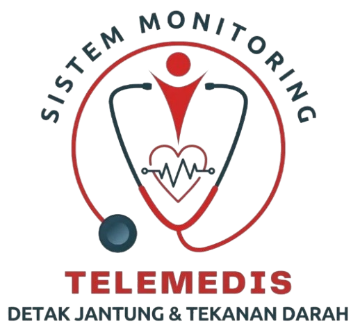
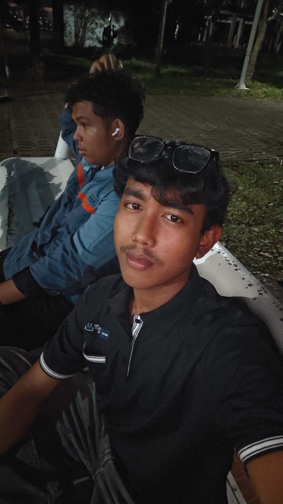
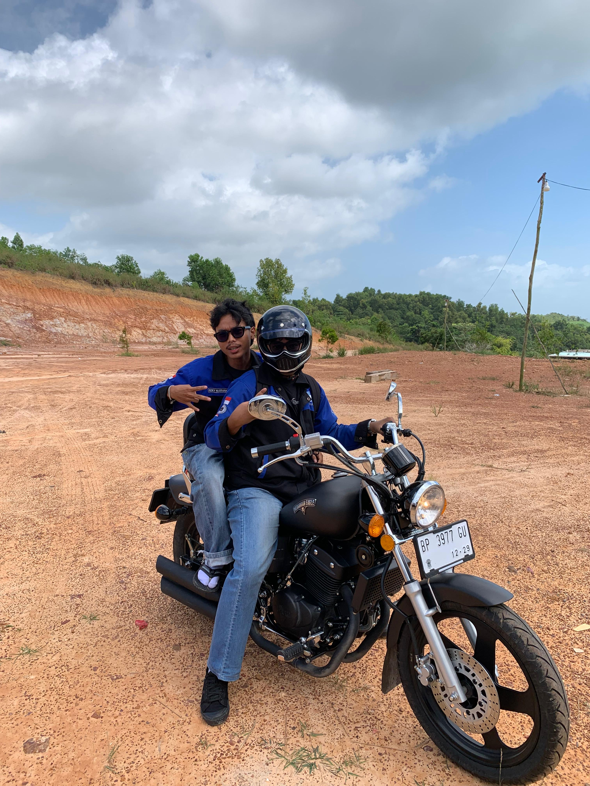
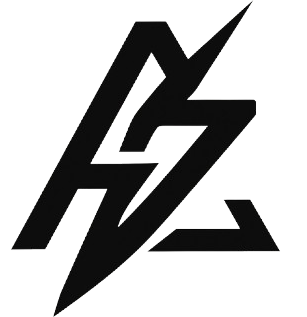
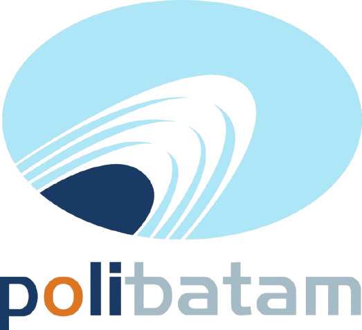

Jl. Ahmad Yani, Tlk.
+62 822-8545-5230
telemedis2025@gmail.com
 TeleMedis
Beranda
Informasi
Login
Tentang Kami
 
BERITA
Judul Berita Pertama
Baca Selengkapnya
Judul Berita Kedua
Baca Selengkapnya
Judul Berita Ketiga
Baca Selengkapnya
PARTNER

